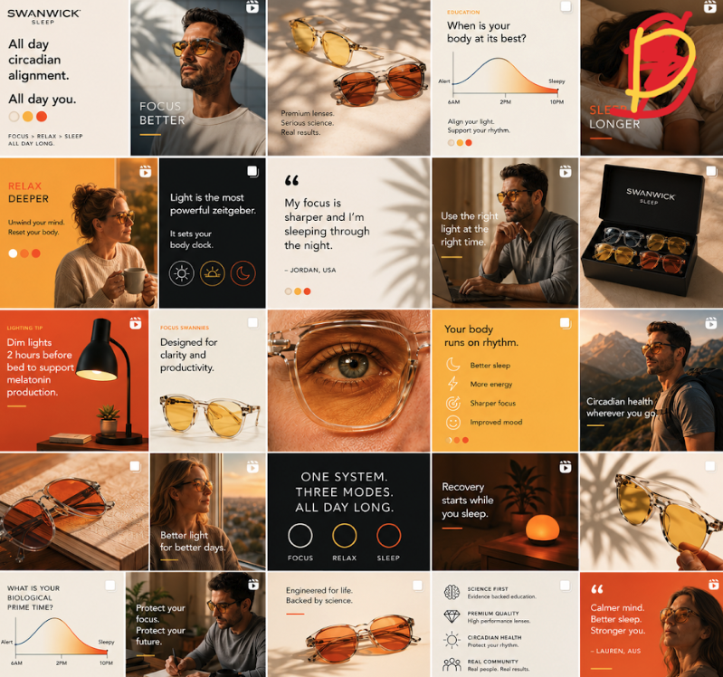

The shared source of truth for colour, type and components as we rebuild on the Symmetry theme. Set these once at the global theme level so every page inherits them.
Warm cream for daylight clarity, golden amber for evening, bright orange for all actions, and warm coral-red for accents only. The old blue has been dropped entirely. It fought against everything else and made the palette feel disjointed. With it gone, every colour now sits in the same warm family and the whole thing reads as one cohesive system. Tap any swatch to copy the hex.
These colours in action across the Swanwick feed. Notice how the warm palette creates visual cohesion and emotional consistency across all content.

Symmetry assigns a scheme per section. Set these up, then alternate them down each page. That alternation is what kills the "boxy" feel without any custom work. Every scheme carries an eyebrow label in its accent colour, chosen for contrast against the background.
Body copy sits in grey for hierarchy.
Shop nowWarm brand colours on the pale background.
Learn moreWarm golden accent brings warmth to dark sections.
ExploreBlack text on gold, red eyebrow for the pop. White is kept for the dark button only, as it disappears on gold.
Shop the rangeReserve warm red for the odd standout block.
Learn moreThe whole site is Montserrat, which is in Shopify's font library, so it loads natively in Symmetry with no workaround. The fix for the thin look the site has now is weight, not a new font.
Primary actions are always the bright orange. Pill radius, Montserrat Medium, generous padding. Define once in Symmetry's button settings.
From the brand doc's photography guide. Across all three: warm directional natural light from the top right, the lens is the brightest element and appears to radiate, visible tactile texture (wood grain, woven fabric, soft bedding), shot at 85mm f/2.0 with a Kodak Portra 400 film tone. Always avoid cold blue lighting, white fluorescent or clinical light, and bright all-white "Bali-style" bedrooms.
These are colour direction swatches, not the final shots. The real photography lives in the library below. Each mood keeps the same warm light source glowing from the top right, so the three sit together as one family rather than three separate looks.